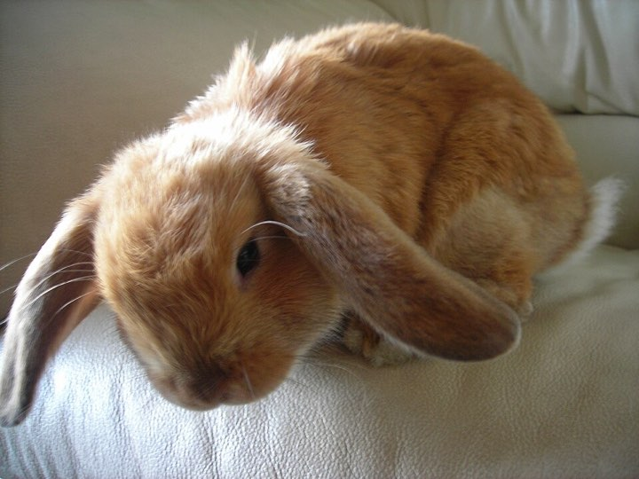

Every pet needs a cozy home
We are the Pawberry Club, an animal rescue and pet care club. We help lost and lonely animals. We keep them safe, warm and happy, and then we find each one a new family.


Adopt me!
How we help animals
Four steps, from a lonely animal to a happy pet with a family.
-
1. We find them
Lost and lonely animals come to our club. They get food and a warm bed right away.
-
2. We make them well
A vet checks every animal. Then we feed them, brush them and play with them.
-
3. We find a family
We look for a kind family with the right home, the right time and lots of love.
-
4. We teach
Kids and grown-ups learn how to care for a pet, so every pet stays happy.
Did you know?
Some true and funny facts about our furry friends.
Rabbits
Their teeth never stop growing. Chewing hay all day keeps them short.
Dogs
A dog's nose is much, much better at smelling things than yours.
Guinea pigs
They cannot make their own vitamin C, so they get it from fresh food.